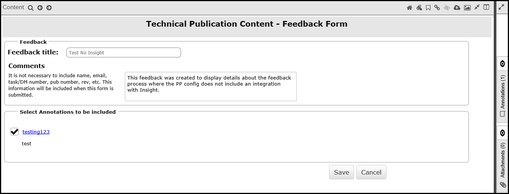
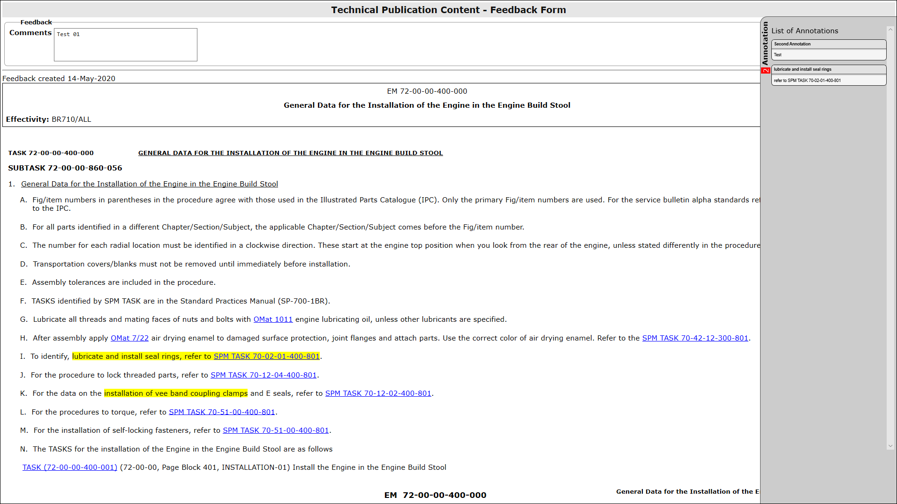

The feedback feature enables users to send a feedback document (html format) to the Tech
Pubs department to request a change or report an issue in the content presented in the
viewer.
Note: This
feature is not available for HTML publications.
The Feedback feature is closely related to the annotations functionality, as a
feedback document optionally can include annotations made to parts of a document.
Here is a quick summary of how the feedback feature works:
- Open the document you want to give feedback on.
- Create annotations in the document. (Refer to Create New Annotation for instructions.
- Click the feedback button to open the Feedback Form.

Feedback Form
- Provide a Feedback title. (This will also be the file name of the html
document.)
Note: You must have at least 8 characters in the title.
- Enter text in the Comments field.
- Deselect annotations that you do not want to include in the feedback.
- Click the button to save the Feedback form.
Note: Any
formatting options that you applied to annotations appear in the feedback
document.
- In the dialog that appears, choose either to open the html file or save it to disk.
Note: If the
annotation has an attachment, you can click that link to download the attachment and
save it.
Note: For IE 11 only: Attachments with a file size greater than 5mb may
be slower to download in feedback html.
Note: The below screenshot provides an example of the feedback document.

Feedback document example
Here is a summary of the features in the feedback document:
- The top section has the comment text from the Feedback Form.
- On the right side, an Annotation section which is displayed when moving the mouse
pointer over it. You can point at the annotation to expand it.
- Annotated text is displayed with yellow highlight.
- Attachments can be downloaded from the html file.
Feedback Feature Integrated with Insight
For details on how to configure the Pinpoint Feedback Insight Integration feature, refer to
the "Integrating Pinpoint Feedback with Insight" in the Flatirons Pinpoint Configuration
Guide.
If configured, these additional optional fields are available on the form:
- Data Module / Fragment Name
- SB Number
- Engine Serial Number
- Aircraft Manufacturers Serial Number
- Completion Date
Note: Refer to the topic "Integrating Pinpoint Feedback with Insight" in the
Flatirons Pinpoint Configuration Guide for details to configure these
fields.
If the Feedback feature is configured with email integration then when the user submits the
feedback form an html file of the feedback form is sent via email to a preconfigured
recipient lists. For details on how to configure the Pinpoint Feedback Email Integration
feature, refer the "Integrating Pinpoint Feedback with Email" in the Flatirons Pinpoint
Configuration Guide.
If the Feedback feature is configured with Insight integration then when the user submits
the feedback form two behaviors are possible which depends on the following settings:
- If the system is configured to redirect the user to the Insight application then upon
submitting the feedback form the system will launch the Insight application and display
the new workflow instance for the feedback on a separate browser tab.
- If the system is not configured to redirect the user to the Insight application then
the user will receive an email confirming the feedback was submitted successfully. The
new workflow instance will be generated in the Insight application however the end user
will not see the automatic redirection to an additional browser tab.